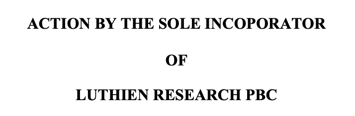

TLDR
We're converting Luthien from a nonprofit to a Public Benefit Corporation (PBC) to accelerate progress on our theory of change.
Why we're doing this
Speed
We're in Seldon Lab: Batch #2 (Jan-Apr 2026 in San Francisco), which requires a for-profit structure. Grant cycles move slower than the market we're trying to shape. We're still waiting for the IRS on tax-deductible status...
Market timing
Coding agent adoption is accelerating. We need to ship products ASAP.
What we're changing
- Form Luthien PBC (Delaware) as the primary operating entity.
- Existing grant funds: We've communicated with all organizations and individuals that supported our non-profit entity and handled each one on a case-by-case basis.
- IP transfer: not applicable. We signed Technology Assignment Agreements (TAAs) and PIIAs at incorporation, so all founder IP was assigned directly to the PBC.
Governance commitments
To ensure the PBC stays mission-aligned, we are considering:
- Mission Guardian Director seat. Our charter authorizes a Class M Director elected by a Mission Guardian Entity (similar in spirit to Anthropic's Long-Term Benefit Trust). The mechanics are in place but we've deferred appointment, no timeline requirement. This lets us evolve the structure as the company grows. Both founders have signed Director and Officer Pledges committing to the mission.
- Dual-class shares. Founders hold Class B shares with 7x voting rights, providing mission-protective control through early financing rounds.
Context: Apollo's approach (for reference)
Apollo Research (founded May 2023, funded by Open Phil and others) announced their PBC transition on Jan 20, 2026. Key elements:
- Designated 3rd and 6th board seats as "mission seats" held by independent directors.
- Hired external IP valuation firm; paid fair market value to nonprofit.
- Nonprofit entity continues for field-building, with "precise details not yet solidified."
- Transparent with funders throughout (had flagged PBC possibility since 2023).
We are following a similar approach adapted to our stage and circumstances.
Contact:
Jai Dhyani: jai@luthienresearch.org
Scott Wofford: scott@luthienresearch.org